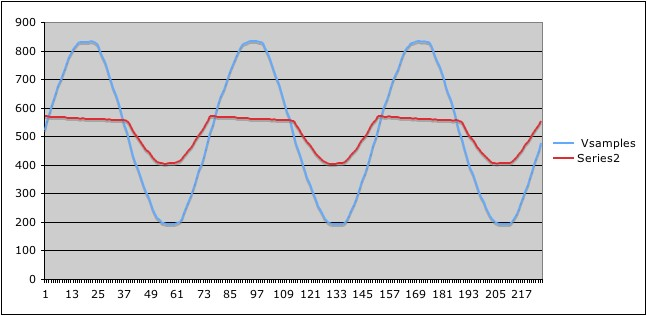

I currently have an ATmega attached to an electrical socket using a transformerless supply and a sense resistor piped into an opamp to juice up the numbers. The values are piped into the atmega analog ports and give me nice pretty output like this

Unfortunately the math to convert that to actual and apparent power escapes me. Obviously I understand that I can multiply a factor times the offset from the baseline (zero point) and get an instantaneous usage value but I'm not clear on how to get accurate values. I have a kill-a-watt meter so I can tell what the values mean, and I came across the emonlib which can do the readings and calculations for me! Sweet. Now I just need to figure out what the coefficients emonlib needs.
Because my current is directly measured, it is exactly in phase with the voltage reading. Does that mean my PHASECAL is 1.0 or 0.0? Is the VCAL the peak to peak (non-RMS) voltage? And what does the ICAL constant represent? I suppose I can just keep tweaking the numbers until I get a working value but I'd like to understand what they are exactly.
Re: Calculating coefficients for phase-accurate current measurements
The short answer is to read up about measuring the various quantities, and doing the calculations, in the "Building Blocks" section. It's hard to tell you exactly where to start reading, since you haven't told us how much electrical theory you know. But I think everything you need to know is there - somewhere.
Re: Calculating coefficients for phase-accurate current measurements
Even though your current and voltage are phase aligned at the ATmega inputs you are still (presumably) reading them at different times because there is only one ADC. This means you will still have to set a PHASECAL value to account for the phase error caused by the delay between the two readings.
VCAL is simply the ratio between the true instantaneous voltage and the voltage at the ATmega input. e.g. if 100V on the a/c line gives 1V at the chip then VCAL is 100. Similarly if 100A instantaneous current results in 1V at the chip then ICAL is 100.
Re: Calculating coefficients for phase-accurate current measurements
The above display is similar to the output from the RawSamplesTool_4ss_2 tool that I posted at http://openenergymonitor.org/emon/node/1705#comment-8535, This allows raw ADC samples to be stored for subsequent analysis in a spreadsheet. Although I didn't post the resulting graph at the time, here it is now. On its half-heat setting, the waveform of the current that is drawn by my Bosch hot air gun is "interesting".

As Martin has said, there are various possible sources of phase shift. The phaseCal algorithm provides a convenient means of adjusting the phase relationship of one waveform with respect to the other. Another tool that I've posted, PhasecalChecker, allows the optimal value of phaseCal to be found when measuring a resistive load. Power Factor will then be very close to unity.
These tools, and others, are listed and linked from my 'sticky' thread at the top of the General forum area.
Re: Calculating coefficients for phase-accurate current measurements
Wow, it is so easy! I'm not sure why I was having such a hard time understanding the relationships. I think I had my head stuck so deeply in my own code that when I looked at something else I just couldn't switch gears. I also thought my phase shift would be negligible due to the current being measured right after the voltage. However it is true that this measurement actually takes place 1/9000th of a second later. That seems insignificant but given a 60Hz voltage period, that amplifies the error by a order of magnitude to 0.67% that can add up over time.
The VCAL/ICAL also makes sense now given the scaling with VCC.
Thanks for the help, this really works great!
Re: Calculating coefficients for phase-accurate current measurements
Thanks for the help, this really works great!
Good. What exactly is your system doing?
Re: Calculating coefficients for phase-accurate current measurements
Oh It is just a project for my own blog / amusement that I started over a year ago and had put aside. Basically it is just a Tweet-a-watt adapted to use the RFM12B transmitter. I already have a ton of the transmitters around my house sending various environmental conditions, BBQ progress, and fermentation information so I was hoping to augment that with power monitoring. The Ladyada project is a cute idea but terrible on the software side, in that it requires the receiver calculate the power and doesn't even do that correctly.
I'll post the code on my github once it is complete. I think others might find it interesting as to save time and therefore power, I actually perform most of the floating point math while the ADC is doing its measurement. It also gives me 75 ADC sample pairs per mains cycle which gives pretty good resolution of the power data.
Re: Calculating coefficients for phase-accurate current measurements
I actually perform most of the floating point math while the ADC is doing its measurement. It also gives me 75 ADC sample pairs per mains cycle which gives pretty good resolution of the power data.
Neat.
If you were to use integer maths, I reckon that all of your processing could be done while the ADC is busy. My PV Router system went up from around 57 to 89 sample pairs per 50 Hz mains cycle when I did this, and it does around 96 when in free-running interrupt mode. Using integer maths also means that the main processor is idle for some of the time, so giving it something else doesn't affect the sampling rate. My Mk2i_rev4 build works in this way.
Re: Calculating coefficients for phase-accurate current measurements
I'm running 128 prescaler at 16MHz so the maximum number of sample pairs I'd be able to get per 60Hz cycle is 80. Even if I comment out all the math I still only end up with 75 sample pairs per cycle. Now that I've done it this way and checked it into GitHub, I may try switching it over to the freerunning style and integer math like they do in the AVR465 application note.
Source code is in the github JeeAWatt project if anyone is interested in seeing it.